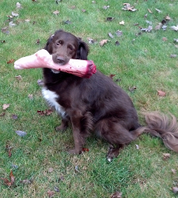
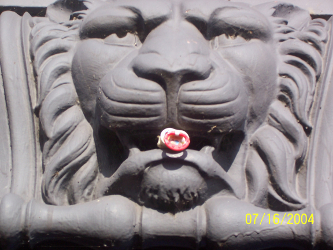
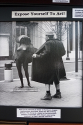
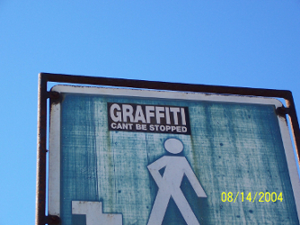
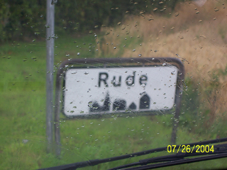
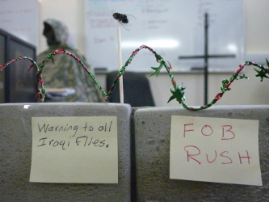
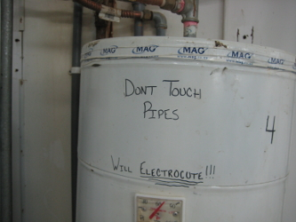
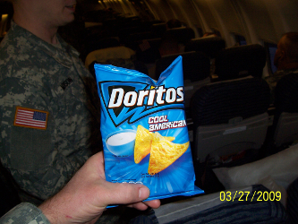
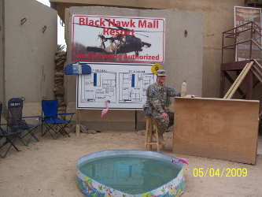

Super Volcanoes!!'Cause who doesn't love the thought of being blown up and par boiled all at once!?! There are at least 4 super volcanoes in the continental US:
So, you see that we're really well populated for extinction-level event volcanoes in here in the good 'ol US of A!!! |
ResearchI've always loved learning. ...aand being mildly Autistic, I love learning ALL about stuff (usually something random that strikes my fancy). Having worked in professional Neuroscience Research, both as a grad student and as full-time support staff, I've got a very strong skillset to deploy for learning cool stuff. I also have my brown belt at Google. :) |
TechnologyI have the need, the need for gizmos!! I love tech-ee things. ...but not for the sake of having a 'gee-whiz' doo-dad sitting on my desk: I like parsimonious solutions to real challenges. Tech offers a lot of potential solutions to a lot of little things. For example: Ceiling fans can circulate warm air (obviously during cold weather) around the house, but kinda suck to have on when the heater's been off for a while. So, wouldn't it be cool if there was a gadget that switched on the ceiling fans when the furnace fan kicked on?? ...and switched them back off a couple minutes after the furnace shut off?? |
NewsYep. I'm a news junkie. It's routine for me to crash my browser because I have 37 tabs with different articles I want to read from media sites. |
Fixin' Things!I think this is an offshoot of researching and technology. I've always liked working with my hands, and there's real pride in making something that stopped working, work again.I'd also like to throw out there: I don't know how many times being able to fix stuff has kept me from walking... |
FantasyFantasy novels, role playing games, movies, online games - all good in my little world. I enjoy the escapism and the stories, but most importantly: I think in movies (like, when I think, it's in moving pictures), which translates into a really vivid imagination! :) |
I also love entendre and innocently obtuse moments. |
||
Good Dog!! |
Fierce beast! |
Enrich yourself!--Snapshot of a picture displayed in Savannah, GA. |
Somebody stop me!! |
Name of a town in Denmark |
Beware all ye wayward Iraqi flies!! |
Safety first. |
They were Cool RANCH--SMH-- |
Ahhh!! |